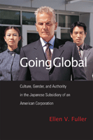

How culture and gender become weapons in the evaluation of both Japanese and female employees at an American company in Japan
How culture and gender become weapons in the evaluation of both Japanese and female employees at an American company in Japan


 How culture and gender become weapons in the evaluation of both Japanese and female employees at an American company in Japan
How culture and gender become weapons in the evaluation of both Japanese and female employees at an American company in Japan

|  |
Going GlobalCulture, Gender, and Authority in the Japanese Subsidiary of an American CorporationEllen V. Fullerpaper EAN: 978-1-59213-689-6 (ISBN: 1-59213-689-3) |
"Going Global is a thorough and interesting ethnographic study of a mainstream US organization in Japan, a context particularly well-suited for addressing the confluence of gender, culture, and authority issues that are its focus. The author's position as a bilingual insider with extensive access both to individuals and to organizational processes gives credibility to the descriptive accounts and confidence in the relevance of the findings. The specific organizational setting also strengthens Fuller's intended interdisciplinary appeal and highlights the rich insights and very real implications for those in similar organizations responsible to hire, develop, and assess managerial employees in foreign operations."
—John A. Volkmar, Otterbein College
In this intriguing ethnography, Ellen Fuller investigates how issues of gender and identity as they relate to authority are addressed in a globalizing corporate culture. Going Global goes behind the office politics, turf wars and day-to-day workings of a transnational American company in Japan in the late 1990s as employees try to establish a comfortable place within the company.
Fuller looks at how relationships among Asians and between Asians and Americans are tested as individuals are promoted to positions of power and authority. Is there pressure for the Japanese to be more “American” to get ahead in business? Do female employees have to subscribe to certain stereotypes to be promoted or respected? How these American and Japanese workers assess one another raises important questions about international business management and human resources.
Excerpt available at www.temple.edu/tempress
"Fuller successfully elucidates ways people exhibit or follow the authorities within the organization where intricate relationships among men and women and cultures (Japanese and American) influence people’s attitudes and behaviour.... Going Global presents an informative case of Transco...In addition, Fuller’s critical analysis on the limited views of 'diversity' held by many managers from the US and still persistent gender perceptions of male managers lead us to think about the difficulty facing companies in developing more efficient and effective management practices in this globalized business world."
— Pacific Affairs
"Going Global is an excellent book for those involved in transnational corporations as well as students and teachers preparing for study abroad trips. It makes readers aware of how assumptions about culture and gender play out in the workplace."
—The Journal of Contemporary Asia
"Fuller provides a unique perspective on the impact of gender and culture issues that face American corporations in a Japanese setting…. The book provides insight for individuals with respect to expectations and challenges, insight she gained through her immersion in the system. Fuller’s use of rich descriptive writing provides the reader with an authentic picture of the rigid barriers that organizations face when placing management employees in subsidiaries located in Japan. For corporate executives considering subsidiaries in Japan, this is a must read."
—Multicultural Review
"Ellen Fuller’s work offers insights into how gendered and cultural biases influence personnel decisions in the Japanese subsidiary of a multinational American company....Going Global is a well-researched case study into an American subsidiary operating in Japan. The author spent a lengthy period in the offices of her subject company and enjoyed extensive access to decision-makers. Fuller’s ambitious interdisciplinary approach and unparalleled access to the firm have allowed for a rare and fascinating study into how power is negotiated between different actors within an organization....[I]t is well worth reading for gaining a deeper understanding of the complex power dynamics that endure within supposedly 'liberal' and 'globalizing' multinational companies."
—The Journal of Asian Studies
Preface
Acknowledgements
1. Culture, Gender, and Authority in Transnational Corporate Contexts
2. Setting Transco within the Contexts of American and Japanese Corporations
3. Uncertainty, Trust, and Commitment: Defining the Self in Relation to Employment in Transco
4. Identity and Perception at Transco: Manifestations of Confusion
5. Authority as Culture and Gender Dominance
6. Embracing Chaos: Toward a More Genuine Valuation of Difference
Notes
Reference
Index
 | Ellen V. Fuller is Assistant Professor of East Asian Languages, Literatures and Cultures and Studies in Women and Gender at the University of Virginia. |
Labor Studies and Work
Asian Studies
Business/Economics
© 2015 Temple University. All Rights Reserved. This page: http://www.temple.edu/tempress/titles/1931_reg.html.